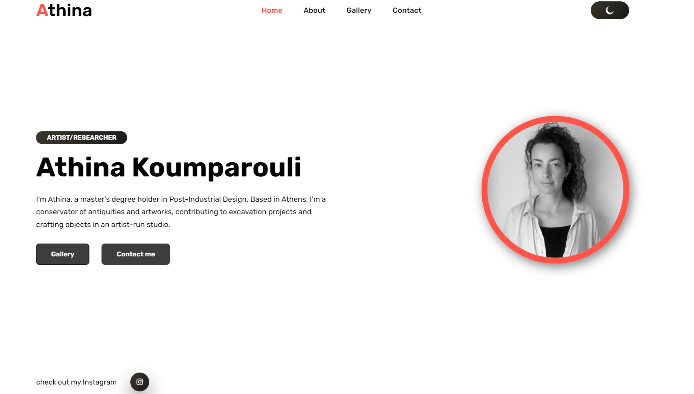
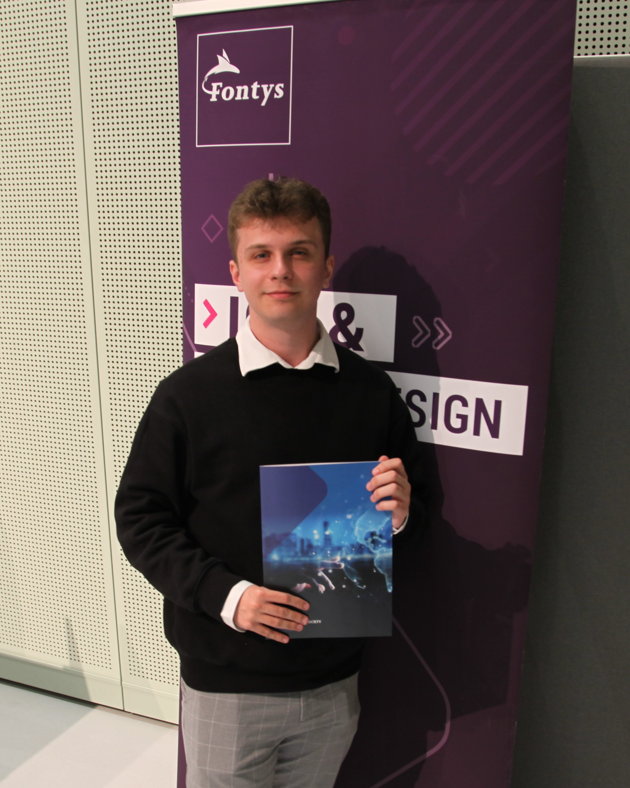
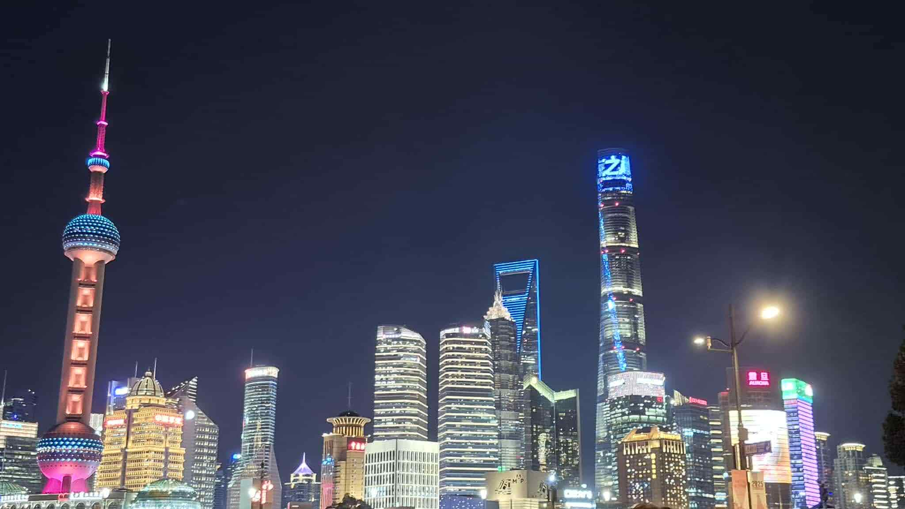
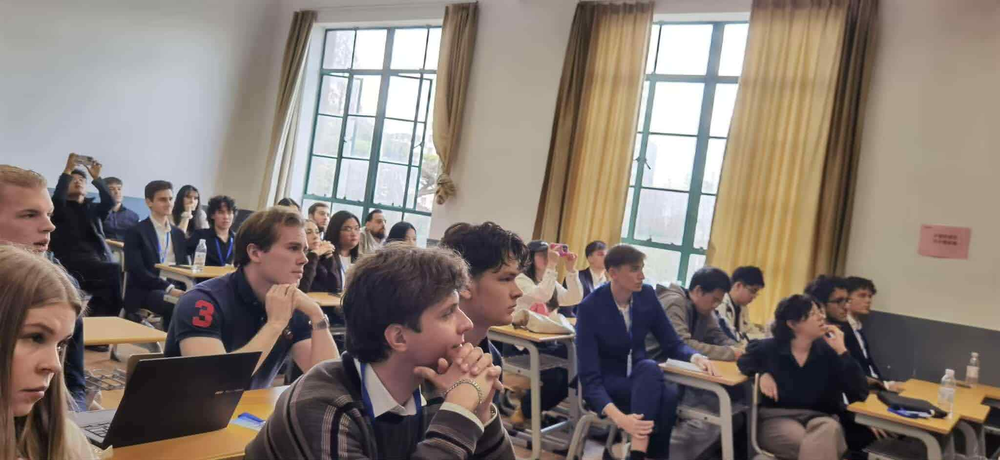
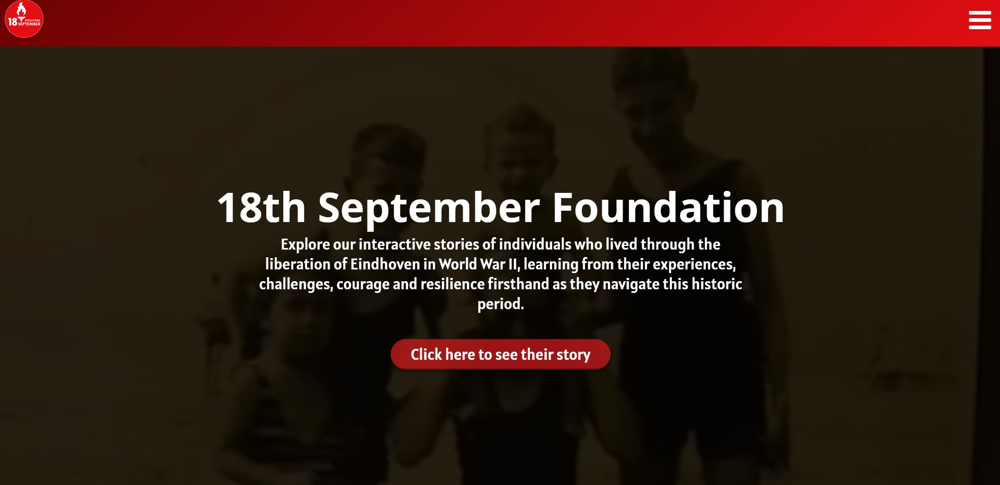
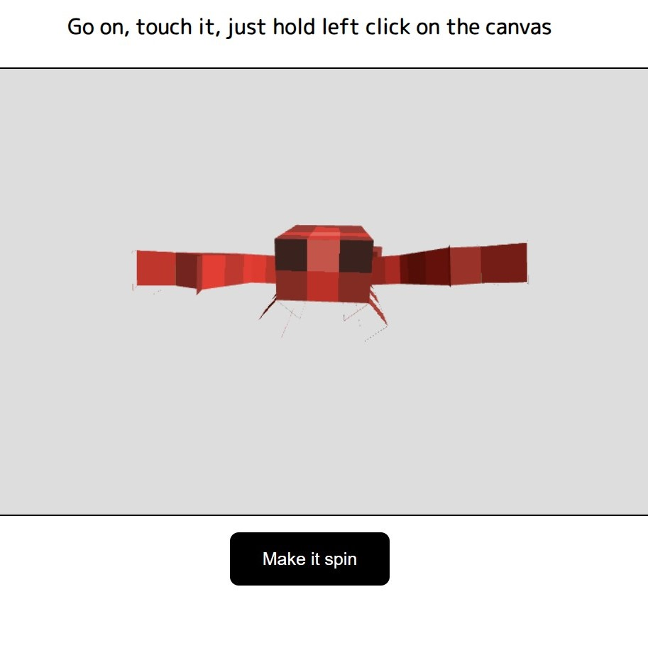
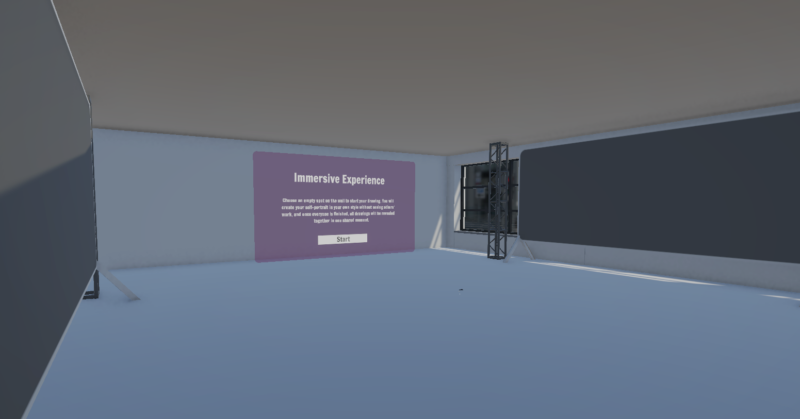
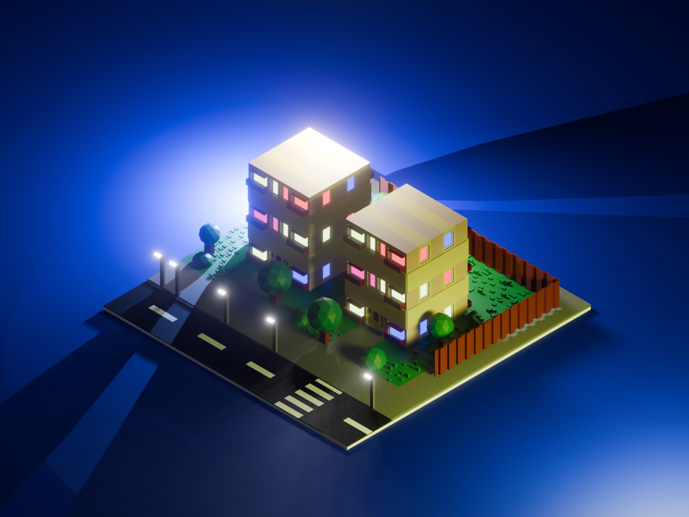

Athina's Portfolio
My first client project is a portfolio website showcasing the client’s work and story, all presented in a clean and responsive layout.
Frontend Developer
I build clean, interactive experiences with an eye for design and attention to the small details that make everything feel right.



I am a front-end developer and ICT Media Design student at Fontys Eindhoven, with a passion for building things that look good and feel even better. I care deeply about clean code, thoughtful design, and creating interfaces that users actually enjoy.
Outside of coding, I am interested in graphic design, mobile development, and exploring how technology and creativity can intersect. I am always working on something, whether it is a new web project, an Android app, or even a VR experience.

My first client project is a portfolio website showcasing the client’s work and story, all presented in a clean and responsive layout.

An interactive story commemorating the victims of World War II in the Netherlands, developed for the 18th September Foundation.
A template developed for Channext as part of an internship interview, implemented from the Figma prototype and showcasing static HTML & CSS skills.

A demonstration of my skills in Three.js, a cross-browser JavaScript library and API used to create and display animated 3D computer graphics in a web browser.

A self-expression tool for Meta Quest 3 built in Unity as part of the Interaction Design semester, featuring an interactive classroom-based environment, a drawing board, and a system for placing user creations on the wall.

A small diorama created in Blender as my first project in the software, showcasing my skills. It presents a colourful suburban neighbourhood.
Work not directly related to front-end development, but still relevant as a showcase of skills in other areas.
An Android application developed for the group Klooigeld, offering a gamified experience to teach users the basics of money saving.
View project →The outcome of my internship with the group DPBTSE, centered on creating a virtual representative designed to combat information overload with the help of LLMs.
View project →Designed merchandise for the POLSOC student association (Polish Society of Students in Eindhoven), including stickers and membership cards, using Adobe Creative Cloud.
View project →A business analysis of the cybersecurity market in China, conducted for the technology certification company TÜV NORD as part of my minor study ‘China and the World Economy.’
View project →Introduction to programming fundamentals, object-oriented design, and collaborative software development. Built foundational skills in C#, version control, SQL databases, and agile workflows.
Due to the need to create more visual work, I switched to the ICT Media Design programme, focusing on web design and development, UI/UX principles, visual communication, and interactive prototyping.
Continuation of the Media Design programme, deepening design skills with a focus on web-based media, motion, and storytelling through interfaces. Applied design thinking to real-world client briefs.
Selecting Smart Mobile as my advanced semester, where I learned the basics of Android app development using XML and Kotlin, including a client project. I also covered mobile UX patterns, API integration, and deployment on the Android platform.
Internal internship at Fontys ICT with the DPBTSE group, focused on developing a virtual representative to tackle information overload using LLMs, with an emphasis on news moderation across journalism, politics, healthcare, democracy, and philosophy.
Participation in the International Business minor programme ‘China and the World Economy,’ focused on understanding contemporary China’s politics, economy, and smart city development, along with conducting a business analysis for a real company client.
Advanced semester focused on complex interaction design challenges, research-driven design, systems thinking, and the creation of meaningful human-centred experiences.
The final placement — a full-scale graduation project in a professional setting, bringing together everything from the degree into one meaningful, real-world product.
UpcomingHave a project in mind or just want to say hi? My inbox is always open.
Send me an email →